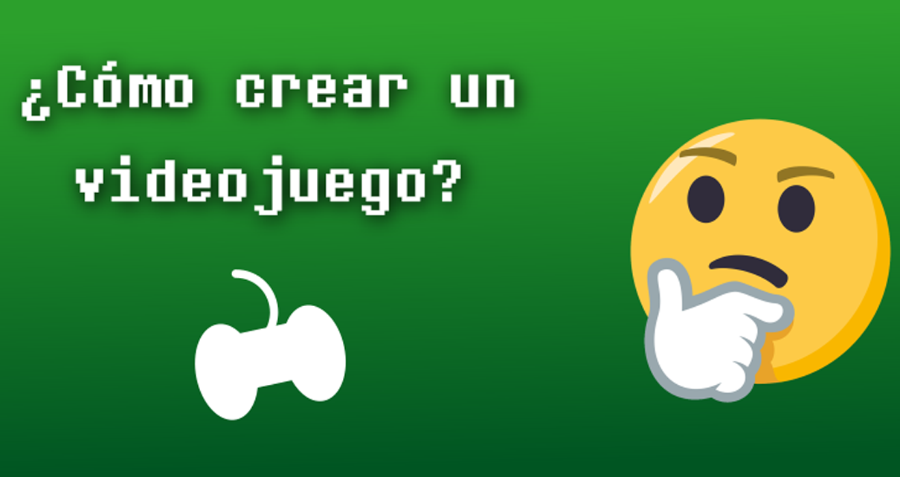

Autor: Isaac Quinzada | Fecha: 24/08/2018 |
Todo videojuego necesita seguir una serie de pasos, una lista de requerimientos que lo pueden volver un buen juego o que de no cumplirlas podrían condenarlo al fracaso. En este artículo vamos a repasar de manera simplificada ¿Qué pasos debemos seguir para crear una obra de arte de los videojuegos?
No solo basta con que aquella deslumbrante idea que tuviste hace una noche te convenza a ti, debe gustarle a todo tu equipo de desarrollo. No hay nada mejor que trabajar motivado. Si crees que tal vez no podrían entender esa idea que tuviste, planea una buena presentación de la misma; las primeras impresiones siempre son importantes, así que la mejor manera de deslumbrarlos puede ser la mejor manera de darles a conocer tu idea.
No debes olvidar escribir esa idea que tuviste, es importante tener en un documento todo aquello que le dará vida a tu futuro videojuego. Además, esta es una grandiosa forma de que todo tu equipo este completamente enterado de sobre lo que deben y no hacer.
Llego el momento de programar todas aquellas mecánicas revolucionarias que pensaste. En muchas ocasiones una buena mecánica hará tu juego muchísimo más atractivo a las personas, siempre y cuando esté bien programada. Trata de dar siempre más prioridad a las mecánicas por sobre la historia, no olvides que uno de tus objetivos es que sea divertido.
Este paso está ligado completamente al anterior, y conlleva todo el diseño de personajes, escenarios, mapas y todo el componente visual de tu videojuego. Un personaje entrañable y escenarios sublimes, hará de tu juego una grandiosa experiencia.
El mejor acompañamiento para el jugador es disfrutar de una buena banda sonora, no olvides que la música no debe despegarse de la temática del videojuego, nadie querría escuchar una música de cumpleaños en un videojuego de terror… o tal vez si ¿quién sabe? Las posibilidades son infinitas. No olvides además de cuidar los efectos de sonido.
La interfaz del usuario es la forma de el usuario de comunicarse con el videojuego, debes tratar de crearla completamente intuitiva, que no le resulte confuso desplazarse entre todos los menús del juego.
Llego la hora de la localización. Localizar un videojuego incluye cambiar el idioma de la interfaz, las expresiones, los textos, los nombres de los personajes y demás. Si quieres que tu videojuego llegue a la mayor cantidad de personas intenta traducirlo al menos a una lengua internacional como el inglés.
Por último, debes corregir todos los errores que tenga tu videojuego, esta es la etapa más larga y permitirá que tu videojuego siga siendo disfrutable tal y como se pensó. A nadie le gusta que un programa no actúe de la manera en que debería, por lo que debes asegurarte de comprobar todas las opciones posibles.